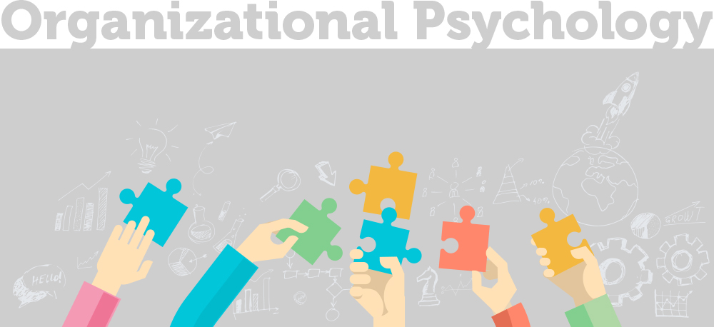
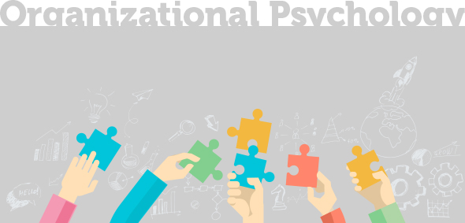

와 제 롤모델이 잡스에요!!! 아이폰 첫 출시되고 나서부터 계속 아이폰 쓰고 있는데 잡스가 너무 그리워요ㅠㅠ 지금은 돈만 벌려고 하는 것 같아서 디자인 발전도 없고ㅠㅠ와 제 롤모델이 잡스에요!!! 아이폰 첫 출시되고 나서부터 계속 아이폰 쓰고 있는데 잡스가 너무 그리워요ㅠㅠ 지금은 돈만 벌려고 하는 것 같아서 디자인 발전도 없고ㅠㅠ와 제 롤모델이 잡스에요!!! 아이폰 첫 출시되고 나서부터 계속 아이폰 쓰고 있는데 잡스가 너무 그리워요ㅠㅠ 지금은 돈만 벌려고 하는 것 같아서 디자인 발전도 없고ㅠㅠ와 제 롤모델이 잡스에요!!! 아이폰 첫 출시되고 나서부터 계속 아이폰 쓰고 있는데 잡스가 너무 그리워요ㅠㅠ 지금은 돈만 벌려고 하는 것 같아서 디자인 발전도 없고ㅠㅠ와 제 롤모델이 잡스에요!!! 아이폰 첫 출시되고 나서부터 계속 아이폰 쓰고 있는데 잡스가 너무 그리워요ㅠㅠ 지금은 돈만 벌려고 하는 것 같아서 디자인 발전도 없고ㅠㅠ
스페셜 칼럼
혁신과 조직심리
글
이경민(이머징 리더십 인터벤션즈 대표)
주 52시간제 도입을 둘러싸고 최근 기업 안팎에서 기업 문화 혁신에 대한 외침이 뜨겁다. 그러나 지난 5월, 대한상공회의소와 글로벌 컨설팅 회사 맥킨지가 조사한 한국의 ‘기업문화 진단 결과’에 따르면 2016년 1차 조사보다 전반적인 기업 문화 개선의 효과가 있었는지 묻는 질문에 직장인 87.8%가 부정적인 답변을 내놨다. ‘근본적으로 개선이 됐다’는 응답은 12.2%에 그쳤다. 국내 기업들은 책임 소재 파악, 조직원 동기 부여 항목에선 글로벌 기업보다 우위를 보였지만 리더십, 업무 조율과 통제 시스템, 업무 방향성 등 대다수 항목은 뒤처졌다. 그러나 지난 2년간 조직문화 개선에 대한 욕구와 시도가 없었던 것은 아니다. 워라벨(일과 삶의 균형) 문화 정착을 위해 6시 전체 소등이나 보고서를 1장으로 줄이는것, 수평적 조직으로 전환을 위해 호칭을 변경하는 것 등 조직마다 다양한 시도들이 있었다. 그러나 아직 현실에서는 ‘무늬만 혁신’이라는 이야기가 나오고 있다.
그렇다면 문제를 알고 있고, 바꾸고자 하는 동기가 있었음에도 불구하고 조직은 왜 혁신을 이루지 못한 것일까?
첫 번째로 조직에서 혁신이 어려운 이유는 ‘조직의 관성(Organizational inertia)’을 생각해 볼 수 있다. ‘외부로부터 힘의 작용이 없으면 물체의 운동상태는 현재의 상태를 그대로 유지한다’라는 물리학의 관성의 법칙과 마찬가지로 사람도 조직도 있던 그대로 있기를 원한다. 관성을 넘어서서 움직이려면 강력한 동기가 있어야 한다. 그러나 물체와 달리 사람이나 조직은 외부에서 주어지는 동기가 일정 부분 변화의 자극이 되기는 하나 내적 동기로 받아들여지지 않는다면 오히려 저항을 불러오게 된다.
두 번째로 ‘조직 이기주의’가 혁신을 가로 막는다. 새롭고 좋은 것보다는 익숙하고 나쁜 것을 선호하는 관성의 특성상 변화란 두려운 것이고, 이러한 조직의 변화는 조직원들에게 불안을 불러일으킨다. 불안이 올라오게 되면 각 조직은 생존과 보호를 위해 ‘우리 조직의 성과가 먼저’ 라는 조직 이기주의와 지나친 경쟁 심리가 발동될 수 있다.
세 번째로 ‘냉소주의’가 혁신을 어렵게 한다. 외부에서 혁신의 필요성이 주어지고, 어쩔 수 없는 변화의 물결 앞에서 관성을 딛고 조직과 경영진이 변화를 하려 할 때 일차적으로는 위에서 말한 조직 이기주의가 팽배한 현실을 마주하게 된다. 조직 이기주의로 혁신이 제대로 이루어 지지 않을 때 조직원들은 ‘우리 조직이 그렇지 뭐’ 같은 냉소주의 반응이 나타나게 된다.


그렇다면 어떻게 조직은 이러한 어려움들을 딛고 혁신을 이룰 수 있을까?
첫 번째로 조직의 관성을 깨기 위해서는 ‘제로베이스 사고’를 도입하는 것이 한 방법일 수 있다. 기존의 성공 방정식을 모두 내려놓고, 의도적으로 새로운 리더를 영입하거나 새로운 조직을 신설하는 방법이다. 예를 들어 신사업을 시작할 때 기존의 성공 방식이나 업무 형태에 영향을 받지 않도록 새로운 조직을 별도로 두는 것이다.
두 번째로 조직 이기주의를 깨기 위해서는 기존의 수직적, 위계적 조직 구성도를 뛰어넘는 수평적이고 프로젝트 기반의 ‘애자일 팀(Agile team)’을 운영하는 것이 한 방법일 수 있다. 이를테면 기능별로 모든 구성원이 들어올 수 있게 Cross functional team을 형성하여 제품의 기획부터 개발, 출시까지 모든 영역을 한 팀 내에서 하는 것이다.
세 번째로 조직원의 냉소주의를 줄이기 위해서는 일관성 있는 조직 운영이 필요하다. 조직이 혁신에 대해 막연한 기대감만 심어준 채 운영에 있어서는 이랬다 저랬다 하는 모습을 보이거나 실행에 전혀 옮기지 않을 때 조직원들은 냉소주의에 빠지기 쉽다.
무엇보다 조직이 위의 장애물을 딛고 혁신을 이루기 위해서는 외부의 자극보다 내부의 동기에 의한 변화가 일어나야 한다. 특히 혁신의 활용 주체이자 궁극적 사용자인 조직 구성원이 해당 혁신을 주도할 때 가시적인 경영 성과를 창출할 가능성이 가장 크다. 위에서 결정하는 탑다운 방식의 혁신이 아니라 현장을 가장 잘 아는 조직원들이 주도하고 주인의식을 가질 수 있도록 업무관련 혁신이나 신기술을 도입할 때 의사결정 과정에서부터 참여를 시켜야 한다. 왜냐하면 조직원들이 현장에서 변화의 흐름과 필요성을 가장 민감하게 느끼고 있으며 변화를 위해 자사 조직에 가장 잘 부합하는 혁신이 무엇인지, 업무성과에 직접적인 기여를 할 수 있는 혁신이 무엇인지 정확하게 선택할 수 있기 때문이다. 그리고 조직원들도 혁신에 대해 외부에서 강제하는 괴로운 변화로 인식하기 보다 자신의 업무 성과를 높이기위해 스스로 선택하고 적극적으로 도입하여 실행하는 주도성을 가질 필요가 있다. 혁신 도입의 과정에서 주도성을 가진 직원일수록 혁신 실행의 여러 단계 동안 높은 참여와 열정을 보일 수 있고, 그럴 때 혁신의 성과가 직원 개인의 경력과 조직에 가시적으로 나타날 수 있기 때문이다.
-
최고예요
322
-
좋아요
322
-
슬퍼요
322
-
그저 그래요
322
-
화나요
322